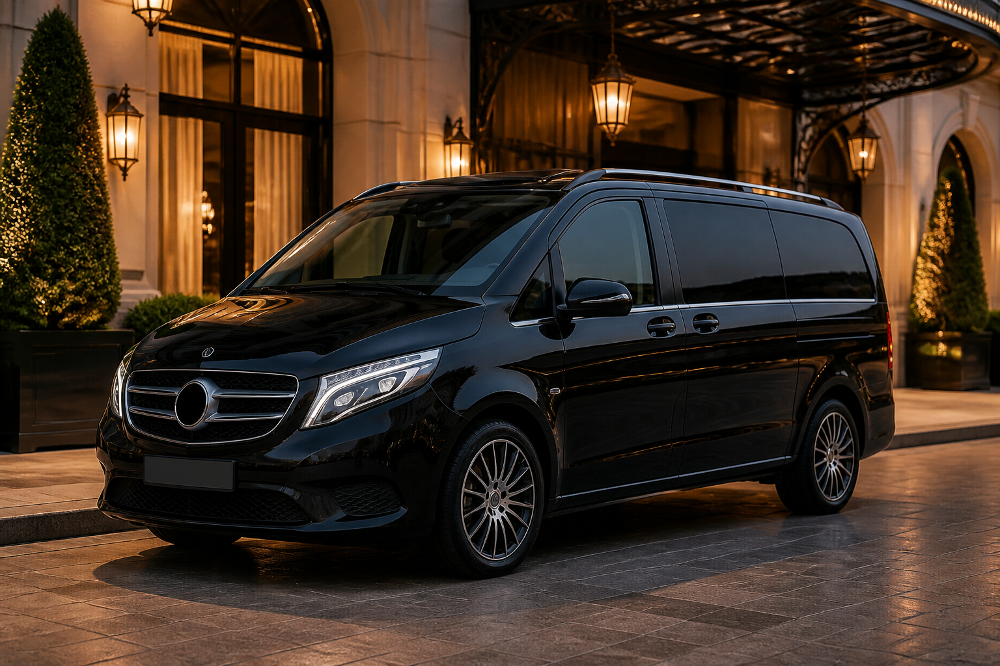

Van premium
Mercedes Classe V noir
Parfait pour les familles, groupes, bagages et transferts aéroport. Habitacle spacieux, confort haut de gamme et présentation irréprochable.
Transport privé haut de gamme
Chauffeur privé, véhicules noirs premium, prise en charge soignée et trajets planifiés vers Genève, Annecy, Lausanne, Montreux, les montagnes suisses, gares, aéroports et événements.

Nos véhicules
Van premium
Parfait pour les familles, groupes, bagages et transferts aéroport. Habitacle spacieux, confort haut de gamme et présentation irréprochable.
SUV électrique
Idéal pour les trajets privés et professionnels avec une expérience silencieuse, moderne et élégante.
Nos services
Transferts vers Genève Aéroport, Annecy, Lausanne, Montreux et les montagnes suisses sur demande.
Prise en charge en gare avec horaires suivis, bagages accompagnés et trajet fluide.
Mariages, soirées, restaurants, hôtels, séminaires et retours tardifs en toute sérénité.
Chauffeur et véhicule disponibles sur une demi-journée, journée ou durée personnalisée.
Tarifs indicatifs
Tarifs indicatifs à confirmer selon l’adresse de départ, l’horaire, l’attente, les bagages et le nombre de passagers.
Réservation
Envoyez le départ, l’arrivée, la date, l’horaire, le véhicule souhaité et le nombre
de passagers. Les coordonnées se modifient facilement dans le fichier config.js.